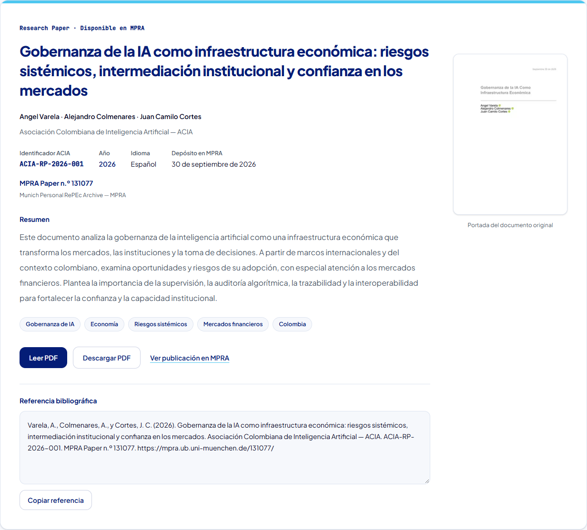
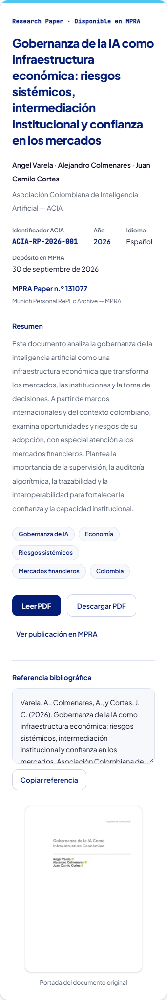
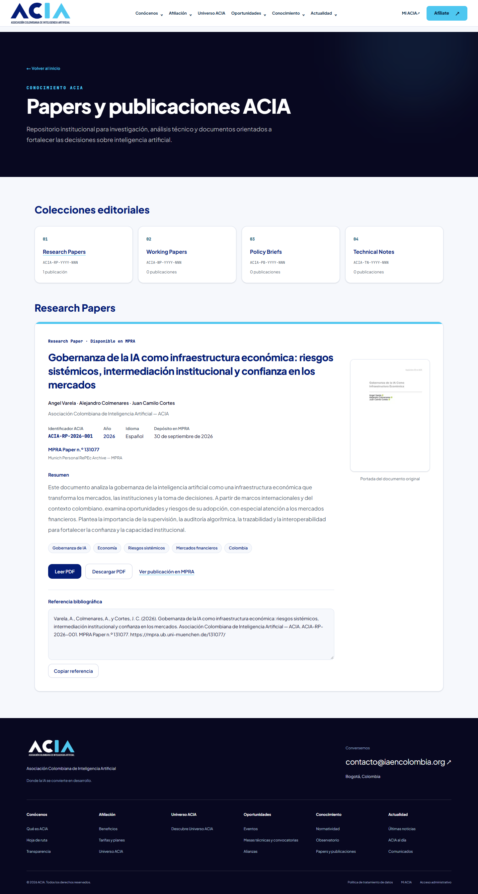
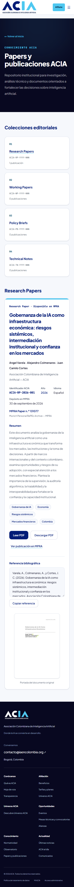

Research Papers · ACIA-RP-2026-001
Capturas de la aplicación Next compilada y ejecutada en localhost. No es una publicación productiva.
Ficha · Escritorio

Ficha · Móvil

Página completa · Escritorio

Página completa · Móvil
